HERO：面向生成式推荐的异质教师在策略蒸馏
本文解读 Diverse-Teacher On-Policy Distillation for Generative Recommendation。第一作者 Zhipeng Yi 来自中国科学技术大学，作者还包括 Xinyu Lin、Minxuan Shan、Zipeng Chen、Yujiao Zhao、Chuanyu Xu、Wenjie Wang，合作机构为新加坡国立大学和阿里巴巴。论文于 2026 年 11 月 2 日首次公开，主类别为推荐算法。论文入口：arXiv:2611.03272。本轮未核验到独立代码或项目入口，不宣称开源。
在策略蒸馏虽然提供更密集的监督，却可能加剧生成式推荐的流行度偏差：教师更偏好热门物品的 token，学生又更常生成这些路径，导致冷门物品的正确路径难以被访问和监督。这两个过程相互强化，限制推荐多样性。
1. 背景和问题
1.1 从物品打分转向语义标识生成
传统序列推荐通常读取用户过去交互的物品，形成用户表示，再对候选物品逐一打分。生成式推荐将候选标识改写为一段离散的语义 ID，模型从历史条件出发逐位置生成该标识，最后把完整标识映射回物品。这样一来，用户偏好、物品表示以及搜索过程都通过 token 概率连接起来。语义相近的物品可能共享部分前缀，完整物品的分数却来自整条路径，前面一次概率分配不佳就可能让后续正确物品退出搜索空间。HERO 的关注点在这个生成链路中的训练监督，而没有重新设计物品分词器或在线重排器。
最直接的训练方式是用用户真实交互物品的语义标识做教师强制学习。每个位置都给定此前的正确 token，只鼓励下一正确 token 的概率提高。这种监督明确且成本可控，但标签只告诉模型一个观察到的答案，未说明其他 token 之间应如何比较。推荐日志中的点击或支付也不是用户兴趣的完整清单：没被曝光的物品没有机会获得正反馈，同一个用户可能有多个合理选择，语义标识前缀之间还存在共享关系。因此，单一硬标签的信息量有限，不能把未观察到的 token 一律理解为无价值。
在策略蒸馏让学生先生成，再由教师在学生真实经过的前缀上给出完整下一 token 分布。教师不只指出一个正确 token，而能对词表中的其他候选分配软概率，这使监督更密集。学生训练时遇到的状态也更接近自己推理时会访问的状态，缓解只沿正确路径训练的分布差异。论文以此作为出发点，承认在策略蒸馏在训练效率和总体命中方面的价值，再追问这种更密集的监督究竟把什么偏好传给了学生。
1.2 教师偏好与学生访问分布形成闭环
推荐数据的流行度分布十分不均匀，高频物品提供了更多可学习交互，教师更容易对这些物品的 token 给出较高概率。学生在自己的生成前缀上模仿教师，会进一步提高热门路径的相对概率；下一轮生成又更常访问这些路径，教师于是继续在相近的热门状态上提供监督。尾物品即使与用户需求匹配，如果其路径在较早的位置就没有被保留，后续 token 就很难获得分布级学习信号。这里同时存在监督来源偏差与监督覆盖缺口，它们不能靠扩大教师输出词表自然消除。
论文中的“头部”和“尾部”按目标物品在训练交互中的频次划分，属于可计算的数据分组。它不是质量高低的判断，也不等同新物品与老物品。公共数据上的尾部命中明确排除了训练期从未出现的目标，后面的频次分层分析还要求尾目标至少有两次训练交互。因而，本文主要证明对有稀疏历史的物品改善监督，而不是解决完全零交互物品的冷启动。把两个概念混为一谈，会高估该训练设计能覆盖的部署场景。
HERO 没有把业务目标简化成推荐越分散越好。用户对热门商品也有真实需求，强行抬高所有尾物品会降低总体相关性。论文希望同时保持整体命中、提升相关尾物品的可达性，并让曝光分配更接近观察到的需求结构。为此需要区分三种量：用户是否命中了目标，曝光在头尾之间是否失衡，以及推荐结果是否反复集中在少数物品。它们描述不同问题，低集中度本身不构成更好推荐的充分证据。
1.3 为什么更密集的监督仍可能更偏
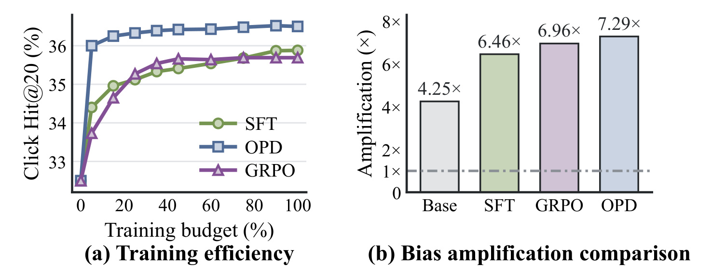
Figure 1 左侧横轴是训练预算百分比，纵轴是 1688 的 Click Hit@20。OPD 曲线较快上升，并在所示预算范围内高于 SFT 和 GRPO，说明作者并未否认软分布监督的学习效率。右侧则展示另一维结果：热门物品的生成份额除以候选集合中的热门物品份额，得到流行度放大倍数。Base、SFT、GRPO、OPD 分别为 4.25、6.46、6.96、7.29 倍，OPD 在这个诊断中最偏向头部。放大倍数不是点击率、命中率或 GMV，不能把 7.29 倍理解成效果增长，也不能据此断言所有 OPD 配置都会达到同样偏差。
这张图的价值在于把效率和偏差放到同一问题背景下：模型更快收敛，不表示它会更均衡地学习全部物品。左侧也采用 Hit@20，而后文工业主结果使用 Hit@240，两者不能直接按绝对数值拼接成提升量。作者用这组观察提出两条方法原则：让教师信号对头尾目标有所区分，以及让正确尾路径获得额外监督机会。后面的实验需要验证这两条原则是否分别有效，而不是仅凭这张动机图就认定偏差因果链已经被完整识别。
对序列推荐工程而言，这个问题发生在训练期与解码期的交界处。训练损失可能下降，总体命中也可能提高，但尾部路径在 beam 中的存活率持续下降；如果只看总体离线指标，问题就容易被忽略。HERO 因而值得阅读的地方是把教师、访问路径、尾部覆盖和最终推荐连接起来。它给出的是一种明确的训练修补方案，并保留单学生推理形态，适合在已有生成推荐框架上开展对照，而不是要求业务一次性替换整个召回排序体系。
还需要注意，语义 ID 的 token 不是彼此独立的物品。一个前缀可能同时覆盖头部与尾部商品，某个 token 获得更高概率，也不能直接解释成所有对应物品都受益。论文按完整目标物品分组来选择教师，随后在同一用户上下文和同一前缀上比较下一步分布，避免把单个 token 的全局频次当作固定的头尾标签。这一点使方法设计比简单给稀有 token 加权更具体，也意味着其收益依赖语义标识构造与合法候选树的组织方式。后续迁移到另一套分词器时，应重新检查头尾物品共享前缀的比例，而不是直接沿用当前分组阈值和教师比例。
2. 方法
2.1 语义 ID 概率与在策略监督
先固定生成任务，才能理解 HERO 改动了哪些训练状态。用户上下文记为历史交互序列，物品通过一串离散码表示，整条路径的概率由逐 token 条件概率相乘。论文式 1、2 和 4 可以合在一起理解为标识定义、物品分数和学生自生成路径：
符号解释：$i$ 是物品，$s(i)$ 是其语义 ID，$L$ 为标识长度，$z_\ell$ 是第 $\ell$ 个离散码，$z_{<\ell}$ 是已生成前缀；$x$ 是用户交互历史，$\theta$ 是学生参数，$\hat y$ 表示学生生成的整条轨迹。概率乘积说明早期 token 与后续状态耦合；只改善后面某个正确 token 的概率，如果前缀根本进不了 beam，仍不能让目标物品出现在候选中。本文不改变语义 ID 本身，而是在固定标识和合法候选树上改变监督来源及覆盖路径。 SFT 采用真实下一物品的路径，论文式 3 为：
符号解释：$\mathcal D_{\mathrm{SFT}}$ 是训练样本集合，$y=s(i^+)$ 是真实目标物品的标识，$y_{<\ell}$ 为正确前缀。该损失对所有位置求和，再对样本求期望，使用硬标签保证模型仍然学习真实用户交互。它只访问真实路径，未直接训练学生对自己错误前缀的反应。HERO 保留这项监督，并在它之外增加软分布匹配，因此不能把整个方法说成放弃真实点击标签、只模仿教师。 标准 OPD 在学生前缀上查询教师，式 5 写为：
符号解释：$p_\phi$ 是教师分布，$D_{\mathrm{KL}}$ 是从教师到学生的前向 KL 散度；两者看到同一上下文和同一学生生成前缀。教师为全部下一 token 提供相对偏好，而非只强化一个采样答案。这个公式以随机生成轨迹表达一般目标；HERO 的实现使用确定性的合法树约束 beam 搜索，再平均保留路径上的损失。二者不能严格视为同一个无偏采样估计，论文也明确区分了这项实现选择。
2.2 异质教师训练与目标感知路由
HERO 根据目标物品的训练频次将训练集划为头部与尾部。头教师使用全部头部样本加一小部分尾部样本，尾教师则相反；跨组抽样比例为 $\rho$，实验设为百分之十。两位教师结构相同，但训练数据组成不同，均从头训练，并在学生蒸馏期间冻结。交叉样本保留另一组的基本知识，避免教师只在单一群体上工作。它们不是两个任意大语言模型的投票，也不是根据模型回答质量在线挑选教师。
对于一条训练样本，选择哪位教师由真实目标物品所属组决定。头目标使用头教师，尾目标使用尾教师；选择后，该样本的所有生成路径和所有位置都使用同一教师。不能根据学生恰好生成了什么物品再路由，否则仍可能主要访问热门分支，并丢失训练目标的尾部信息。目标标签在训练期本来已知，推理时完全不需要这一组别选择，因此这里不存在要求线上预先知道下一点击物品的问题。
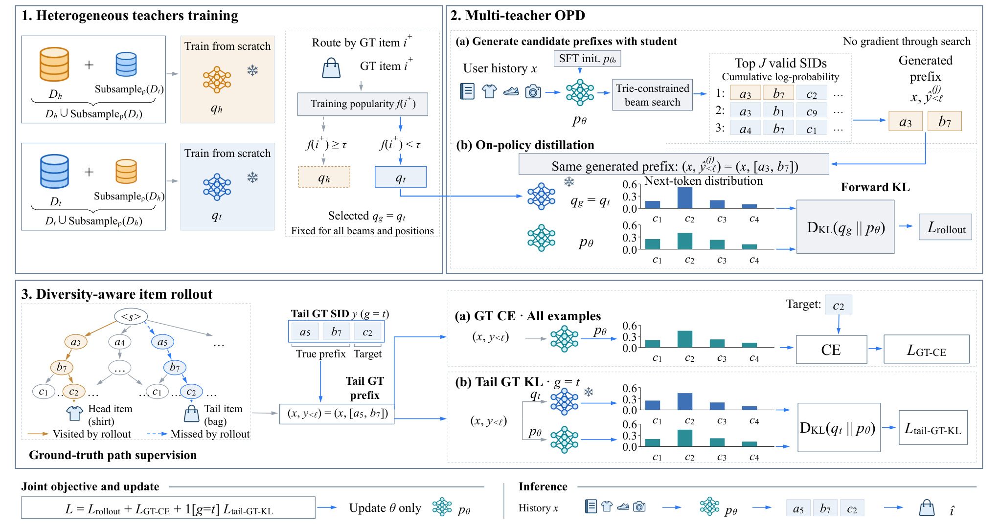
Figure 2 左上角展示两位教师的训练数据混合；右上角先由 SFT 初始化的学生，在合法候选树中产生累计对数概率最高的若干完整语义 ID，再让被路由教师和学生在相同生成前缀上计算下一 token 分布。图中的尾目标是包，学生的高分生成路径却可能停留在衬衫方向。教师按包这个真实目标选为尾教师，而不会因学生生成了衬衫前缀就切回头教师。这正是样本级路由与生成路径级判别的区别。
图的下半部分把真实路径拆成两条监督：所有样本都有真实目标的交叉熵，尾样本再让尾教师沿正确前缀给出分布。这样，同一尾样本既在学生真实访问的错误状态上学习，也在尚未访问到的正确状态上学习。图中蓝色箭头与损失流最终都汇入学生参数，教师保持冻结。最下方推理部分只保留历史、学生和合法 ID 到物品的映射，没有教师、标签路由或额外尾路径输入，所以新增的复杂度主要存在于训练阶段。图内的示例文本和损失标注是原图组成部分，不是额外添加的实验结论。 论文式 6 将多个学生 beam 的前缀监督平均：
符号解释：$J$ 为保留完整轨迹数，$\hat y^{(j)}$ 是第 $j$ 条学生轨迹；$g\in\{h,t\}$ 表示真实目标的头尾组，$q_g$ 为相应冻结教师。损失对位置求和、对轨迹平均。生成 token 决定上下文，但不对 beam 搜索过程求导；梯度只更新这些前缀位置上的学生概率。由此，改变学生会影响下一批的访问分布，却不意味着当前步会通过离散路径选择直接反传。
2.3 尾路径监督与联合优化
教师路由可以改善已访问状态上的反馈，却无法保证学生访问到正确尾路径。HERO 因此补入真实尾目标标识：这条路径不由当前学生概率决定，能覆盖被 beam 剪掉的正确前缀。所有样本的真实路径交叉熵对应式 7：
符号解释：$y_\ell$ 和 $y_{<\ell}$ 都来自真实目标，这里省略样本期望以写单条样本损失。它与前述 SFT 的单样本形式一致，防止蒸馏只保留教师的软偏好而弱化真实正反馈。注意这不是仅对尾物品加权的损失，头尾全部训练样本都保留它。 尾样本的额外分布监督对应式 8：
符号解释：$q_t$ 是尾教师，$y_{<\ell}$ 是真实尾路径前缀；教师与学生再次使用相同条件，但条件由真实标识而非学生生成给出。这个损失即使在正确尾路径缺席于当前所有 beam 时也存在。它补充的是正确状态下的整词表软反馈，因此和重复增加尾样本的硬标签权重并不相同。 三项组成式 9 的最终目标：
符号解释：$\mathbf1[g=t]$ 在尾目标样本上为一、其他样本为零，三项权重均为一。训练对每个小批量联合计算可用损失，按样本平均后做 AdamW 更新，只有学生参数改变。单位权重让结构清晰，但不表示所有梯度范数天然相等；不同路径数、标识长度和教师置信度都会影响实际优化强度。复现时必须保留式 6 的轨迹平均、位置求和和这项样本平均，不能将它们随意替换成对全部 token 一次平均后还宣称目标完全相同。
HERO 保留学生自生成路径与真实尾路径这两种状态分布，是一种有目标的混合监督。它没有证明任意扩大尾部都有效，也没有提供对真实曝光倾向的无偏校正。尾标签仍然来自已有交互日志，分组仍然依据历史频次。它的可检验主张是，在所评估的数据和训练设置下，这套双教师与双路径安排能比单教师 OPD、固定教师混合或尾 CE 重加权更好地兼顾相关性和尾部覆盖。
3. 实验结果
3.1 数据、指标与总体对照
工业数据来自 1688，每个页面访问是一个推荐实例，可以对应多个点击或支付目标。SFT 使用 2026 年七月十六日至八月四日数据，后训练只用最后四天，测试采用八月六日。公共数据为 Amazon Reviews 2023 的 Beauty、Pet 与 MovieLens-1M；前两者保留指定两年窗口的有效评分并去重，MovieLens 评分全部作为隐式交互。数据经过迭代五核过滤，按全局时间切分为百分之八十、十、十，历史最多取五十个物品，检查点由验证集选择。Beauty 有八万余用户、五万余物品和九十四万次交互，Pet 为六万余用户、两万余物品和五十二万次交互，MovieLens 为六千余用户、三千余物品和近百万次交互。
头部频次阈值在 1688 为四千零九十六，三个公共数据依次为三十三、四十四、七百八十三；低于阈值归入尾组。工业模型使用六层、隐藏维度五百一十二的 PrefixLM，每层十二个前馈专家激活三个；公共数据同为六层，隐藏维度三百八十四，每层八专家激活两个。同一数据设置中学生与两位教师结构相同，这不是以更大参数教师压缩到更小学生的实验。公共数据用文本嵌入与残差量化生成三个语义码，再加碰撞码；1688 使用四层、每层五百一十二条目的码本。后训练 rollout 保留三十二条合法 beam，推理分别使用 Beam-240 和 Beam-20，必须区分训练路径数与最终推荐截断数。
命中率回答目标是否进入前若干结果。工业 Click Hit@240 和 Pay Hit@240 都以符合条件的页面访问为分母，只要命中任意点击或支付目标就记成功，不是逐物品召回率。公共 Hit@20 每例只有一个下一物品目标。需求与曝光校准则通过式 10 中的份额计算：
符号解释：$U$ 为评估实例，$K$ 为推荐截断，$\hat i_{u,r}$ 是第 $r$ 位推荐，$I_g$ 为头或尾物品集合，$Y_u$ 为真实需求目标，$w_r$ 为排名折扣。$E_g$ 是曝光份额，$M_g$ 是日志中的需求份额；DTR 为一表示两组曝光与观察需求成比例，表中用距离一的绝对值评价。ORR-Top5 是全体推荐槽位中最常生成的五个物品所占份额，越低越不集中。日志需求仍受曝光机制影响，这一校准不能直接解释成对潜在真实兴趣或公平性的无偏恢复。
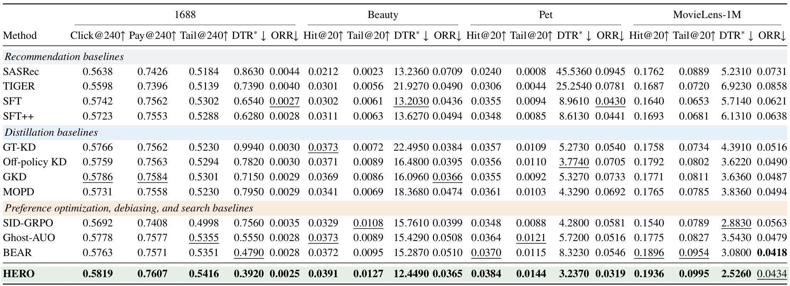
Table 1 把推荐基线、蒸馏基线以及偏好优化和去偏方法放在固定语义标识、候选树、切分与解码条件下比较。HERO 在 1688 的点击、支付、尾点击命中分别为 0.5819、0.7607、0.5416，高于 SFT 的 0.5742、0.7562、0.5302，也高于标准单教师 OPD 即 GKD 的 0.5786、0.7584、0.5301。相对 SFT，点击提高 0.77 个百分点，尾点击提高 1.14 个百分点；这些百分点差不能写成同数值的相对百分比。Beauty、Pet、MovieLens 的整体 Hit@20 分别为 0.0391、0.0384、0.1936，相应尾命中为 0.0127、0.0144、0.0995，显示收益不只来自工业数据。
多样性列则要求更谨慎解读。HERO 相比 GKD 降低全部四个数据集的 DTR 偏离和 ORR，但没有在每一列全面第一：MovieLens 的 ORR 为 0.0434，高于 BEAR 的 0.0418；Pet 的 DTR 偏离 3.2370 也意味着仍明显远离理想的一。HERO 的长处是总体命中、尾命中与校准一起改善，而不是彻底消除集中度。表中还可见，继续 SFT 的工业三项命中均低于初始 SFT，说明相同近期数据再训一轮并不自动带来收益。表头各数据集分组与所有指标必须共同读取。比较后训练方法时，应把训练数据和初始化固定，避免将额外近期样本的价值错误归给某个损失名称。
3.2 教师和路径分别贡献了什么
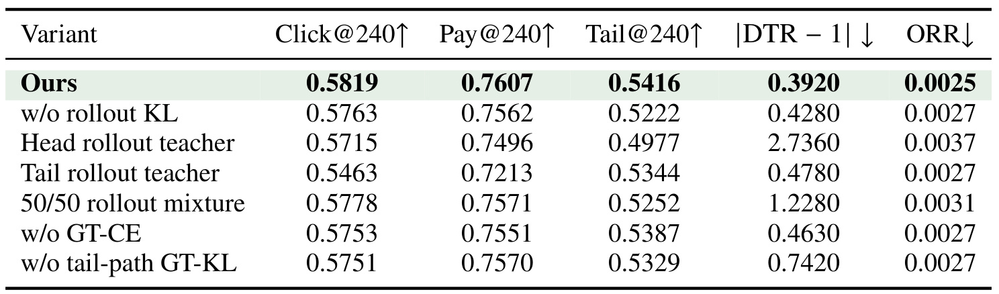
Table 2 的完整模型仍是点击 0.5819、支付 0.7607、尾命中 0.5416。移除 rollout KL 后，尾命中降到 0.5222，是三种损失删除里最大的尾部下降，说明在学生实际访问状态上学习不能被真实路径监督完全替代。移除尾路径 GT-KL 后尾命中降到 0.5329、DTR 偏离从 0.3920 恶化到 0.7420，表明额外正确路径确实提供了不同信息。删除 GT-CE 也使三项命中降低，提示直接正标签仍然必要，教师软分布没有替代全部监督。
统一使用头教师时尾命中只有 0.4977，统一用尾教师则总体点击跌至 0.5463；固定等权混合两教师的点击为 0.5778、尾命中为 0.5252，均不及按真实目标路由。需要注意头教师变体同时省略尾路径 KL，因此它不是只替换一位教师的纯单变量实验。表中的结论应是整套样本路由与尾路径方案优于这些所评估配方，而非从一个行差精确分离出每个模块的独立因果效应。成本方面，表内没有完整两教师准备成本和吞吐对照，不能由推理单学生就推出训练开销可忽略。
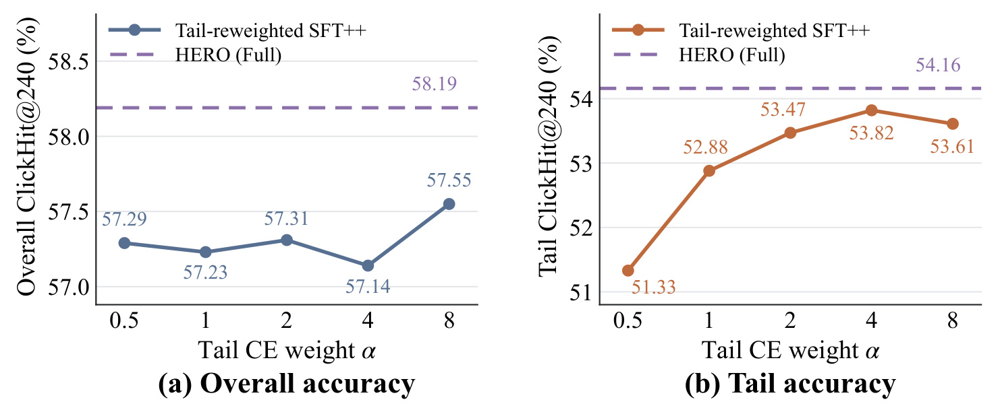
Figure 3 固定头样本权重为一，把尾样本的 CE 权重在 0.5、1、2、4、8 之间改变，保持继续 SFT 的其他设置。左侧总体点击命中从约 57.14% 到 57.55% 之间变化，均低于 HERO 的 58.19%；右侧尾命中最高为权重四时的 53.82%，也低于 HERO 的 54.16%。随着权重增加，尾部曲线并非单调提高，权重八反而降至 53.61%。这说明本组实验中，仅放大已有尾标签的梯度强度，还未达到混合路径与异质教师的效果。
该图没有证明重加权在其他搜索范围或其他骨干上永远无效。它支持一个较窄而有用的判断：HERO 的收益不能简单解释为多看了尾样本，因为同样训练数据上的硬标签加权未复现它的联合收益。软分布能传递替代 token 的相对关系，真实尾路径补充了学生 beam 不访问的状态，这两点与只改 CE 系数存在机制差异。复现实验时应保留总体与尾部两根曲线，若只挑尾部最高点而不看总体命中，就可能把精度转移误当作免费改善。图中的差值仍属于命中率百分点，不是线上成交的相对增长。
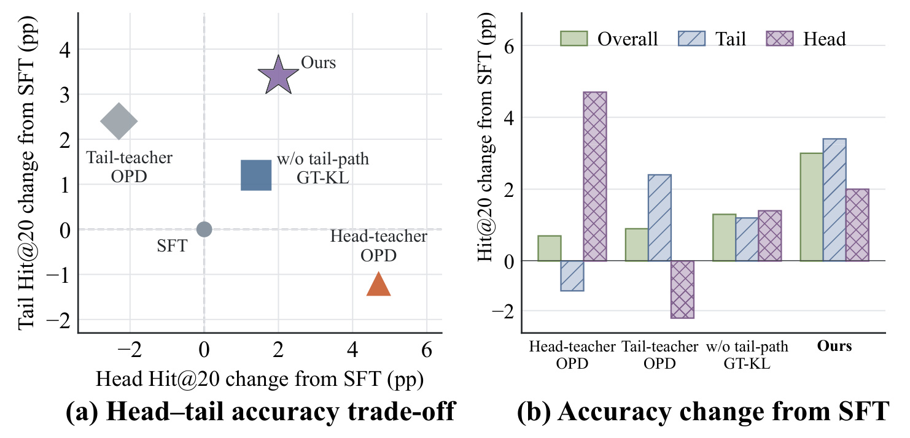
Figure 4 用 MovieLens-1M 展示不同教师选择相对 SFT 的变化。左侧横轴为头物品 Hit@20 的百分点变化，纵轴为尾物品变化；头教师位于右下方，偏向提高头部而损害尾部，尾教师位于左上方，方向相反。去掉尾路径 KL 的路由版本落在右上象限，完整 HERO 又进一步向上移动，说明在这组设置中可以同时改善两组准确率。右侧以并列柱状重新展示总体、尾、头三项差值，让总体均值没有掩盖少数群体的下降。
读这张图时应把“改善两组”限定在该数据集和所画配置。不同头尾份额会影响总体命中，即使两项分组的绝对变化看起来相近，对全局平均的贡献也可能不同。完整模型并没有在两个组都达到各自专门教师的最高点，后面教师能力保留诊断对此给出更明确数字。它更像是在同一学生内寻找兼顾点，而不是消除所有权衡。对业务迁移，最有价值的是沿用这种二维评估：先检查某个模块是否通过牺牲另一组换取表面收益，再讨论是否值得增加训练复杂度，而不是只报告一个全体用户的平均命中。
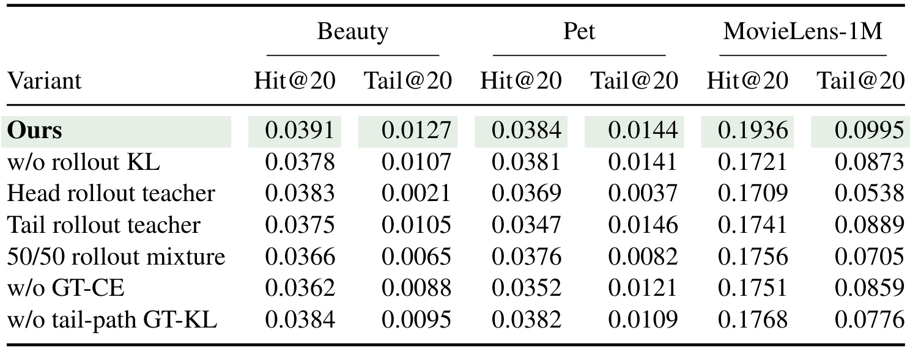
Table 3 把消融扩展到三个公共数据，避免仅由 1688 的专有分布支撑机制结论。完整 HERO 的 Beauty 整体和尾命中为 0.0391、0.0127；删除尾路径 KL 后为 0.0384、0.0095，尾部相对下降较明显。MovieLens 的完整整体为 0.1936，删除 rollout KL 后降到 0.1721，删除尾路径 KL 后为 0.1768，说明两类路径在该数据上都有贡献。固定教师混合也没有达到完整方法，支持按样本目标分组提供反馈的设计动机。
但“完整模型每一项最优”并不成立。Pet 上尾教师变体的 Tail@20 为 0.0146，略高于完整方法的 0.0144；其整体命中只有 0.0347，低于完整方法的 0.0384。这是一个清楚的局部折中，不应从笔记里删掉。表内数值没有提供多次种子标准差，0.0002 这样的差距也不能自行宣称统计显著。跨数据的重复趋势比一个小数位的胜负更可信。公共消融的主要信息是模式在不同数据上重复出现：只用头教师会严重压低尾命中，单用尾教师会损失整体效果，联合设计通常更均衡。它尚不能替代对不同随机种子、分组阈值和模型容量的系统稳健性检验。
3.3 反馈密度、前缀覆盖与分组收益
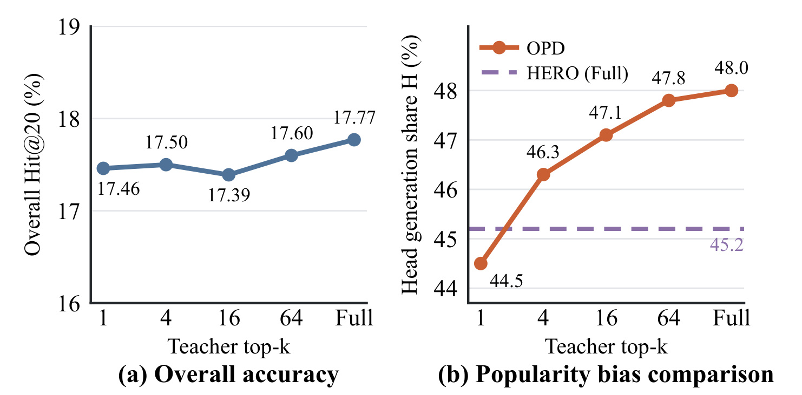
Figure 5 保留全部语义 ID 预测位置，只改变教师反馈中显式保留的候选 token 数量，从 top-1、4、16、64 到完整词表。左侧整体 Hit@20 在 17.39% 至 17.77% 之间小幅波动；右侧头物品生成份额却由 44.5% 上升到 48.0%。HERO 使用完整词表监督时的参考线约为 45.2%，低于普通 OPD 的完整分布。由此可见，更密集的教师分布不只是提供更多知识，也可能更充分地传递原有流行度偏好；总体准确率的微小变化不足以暴露这种分布迁移。
这里横轴的 top-k 是教师反馈截断量，不是推理 Beam-20，也不是目标推荐列表大小。混淆三个参数会误解实验干预。图仍是条件性证据：它说明在一个数据集、一个教师配方里，扩大反馈候选伴随头部份额提高，不意味着软分布监督本身有害。HERO 保留完整反馈却能降低偏向，恰好说明监督的异质性与路径覆盖可能比单纯减少知识量更有效。若部署中观察到离线命中略涨而头部份额持续爬升，应先建立相同诊断，再决定是改教师数据、改路由还是改路径，而不必立即把完整 KL 换回单 token 硬标签。
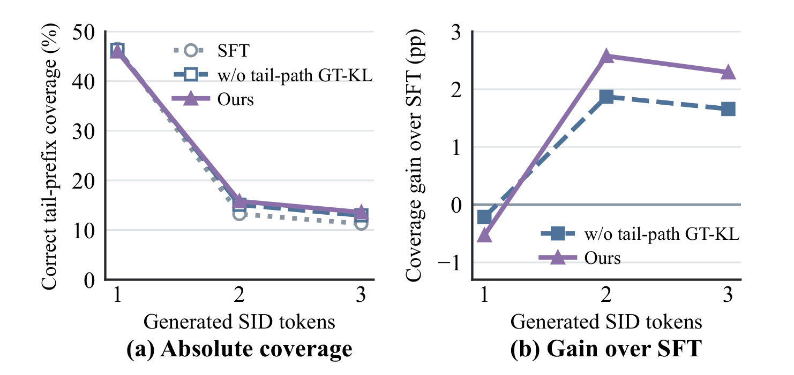
Figure 6 在 MovieLens-1M 上执行自由 Beam-32 生成，检查每生成一位语义码后，至少一条轨迹与真实尾路径前缀一致的样本比例。左侧三种模型在第一位的覆盖接近，随着序列变长，正确路径逐步流失；完整 HERO 在第二、第三位保持更高覆盖。右侧把差值相对 SFT 展开，完整方法在后两个位置约有两点多个百分点增益，删除尾路径 KL 的版本增益较小。第一位的完整方法差值略为负，说明收益并不是从所有位置无条件累积而来。
这项诊断把训练设计与实际解码行为连起来：真实尾路径 KL 的作用不只体现在教师强制损失下降，也体现在自由生成时正确后续前缀更容易存活。不过它仍不构成尾部所有损失都来自 beam 剪枝的证明，因为模型概率、教师偏好与语义 ID 组织共同决定结果。覆盖率也不是完整 Hit@20，实验用了三十二条轨迹，且检查的是部分前缀而非最终物品。最值得复现的是整个前缀存活曲线，尤其检查更长语义码、不同 beam 宽度或共享前缀更多的码本是否仍然呈现类似形态，而不要只复制一个最终位置的差值。
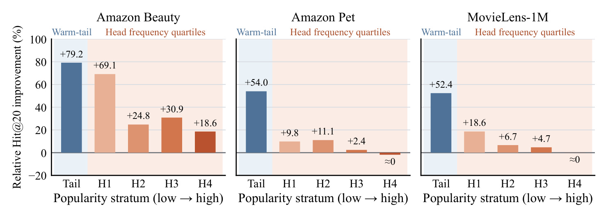
Figure 7 的蓝色柱是至少有两次训练交互的温尾目标，后面的橙色柱为头物品内部按频次分出的四个分位组。Beauty 的尾目标相对 SFT 命中提升 79.2%，Pet 为 54.0%，MovieLens 为 52.4%；较低频头组仍有改善，而 Pet 与 MovieLens 的最高频组基本不变。Beauty 的头组并不严格单调，例如中间某组增幅高于前一组，因此应写成总体倾向于让低频目标获得更大收益，不能夸大成一条严格频次定律。
这些百分比是分组命中率的相对变化，不是提升相同数值的百分点。低基线会放大相对数值，因此需要结合 Table 1 的绝对尾命中判断真实规模。更关键的是，蓝色柱明确排除了训练交互不足两次的目标，不能把它描述成完全新物品的泛化实验。该分组支持的方法解释是：对已有少量行为证据的尾物品，额外正确路径监督帮助学生更好保留相关状态。下一步应补充尾部实际样本量、绝对命中和置信区间，检查不同阈值下曲线是否稳健；否则，单看几个高相对增幅可能过度推断系统对所有稀缺物品都同样有效。
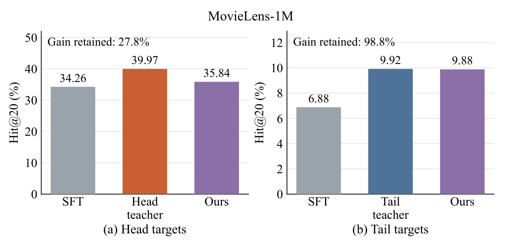
Figure 10 使用时间排序最前面的四千零九十六条 MovieLens 验证上下文，采用相同合法 Beam-20，对比教师专长能传给单学生多少。头组中 SFT 为 34.26%，头教师为 39.97%，学生为 35.84%；按“学生相对 SFT 增益除以教师相对 SFT 增益”计算，保留率约 27.8%。尾组对应为 6.88%、9.92%、9.88%，保留率为 98.8%。HERO 几乎保留尾教师优势，但只保留较少头教师增益，清楚说明异质蒸馏并非把两位教师全部能力无损叠加。
该图是诊断子集，不是 Table 1 全测试集结果；两处尾命中数字不同，不能据此判断论文矛盾。头尾组的基数、难度和教师提升空间也不同，保留率不能直接当作训练效率。它提供更细的研究问题：完整方法的均衡收益，是否以部分放弃头教师上限为代价，以及真实尾路径监督是否更容易把尾专长传给学生。后续若要增加教师数量，应首先测量这种能力迁移矩阵，而不是假定专家越多越好。也应检查该子集的时间顺序是否影响观察，避免将单个验证片段的近满保留率外推到其他用户、物品或未来分布。
3.4 用户活跃度与线上验证
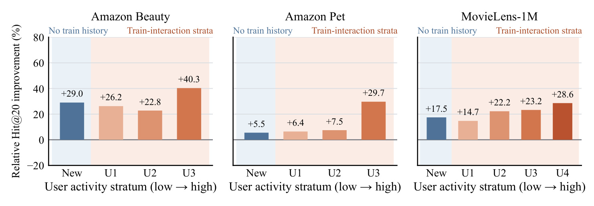
Figure 9 依据用户训练交互数量划分 New 与若干活跃度组。没有训练历史的用户进入 New，其余用户按活动量分位划分；低样本组会被合并，确保每个保留组至少有一百次 SFT 命中。三个数据集的各保留组均为正相对增益，Beauty 的 New 约 29.0%、Pet 为 5.5%、MovieLens 为 17.5%，更活跃用户同样可能获益。这说明效果并非只集中在低活跃用户，也不能简单归结为为新用户补信息。
图中的 New 是用户维度，不是新物品维度。即使没有用户训练历史，目标物品仍可能在训练集中出现；不能将此图和前面的尾物品实验合并成双重冷启动证明。各数据集的组数不同，也与合并低支持组的规则有关，不是作者漏画统一分位。该设计提高了可读性，但相对增幅仍缺少组级不确定性区间。对实际系统，这提示应同时按用户活跃度和物品频次交叉检查：仅按一个维度的正向结果，无法排除另一个细分群体受损。当前论文提供初步分层证据，尚没有完整的双维切面与交互效应分析。
线上试验在 1688 首页“猜你喜欢”进行，作者写明从九月二十四日至十月九日、持续十五天，按用户随机分到 HERO、已有生成式推荐和传统非生成式推荐三个等流量组。相对已有生成推荐，GMV 增加 3.412%，$p=0.0104$，百分之九十五置信区间为正的 0.759% 至 6.065%。GMV 包含直接和间接转化的总成交金额，这是相对变化，不是成交率百分点。相对传统系统的 25.3% 增加是不同系统层级的参照，不能全部归因于 HERO 的蒸馏损失。本文没有独立复现实验，但该协议比只报告一个线上增幅提供了更完整的证据。
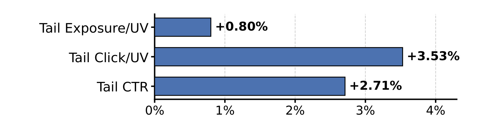
Figure 8 的三条柱分别是尾物品每用户曝光、每用户点击和每曝光点击率，相对已有生成推荐提高 0.80%、3.53%、2.71%。曝光增量较小而点击增量更大，与点击效率改善的方向相符，也说明观察到的尾部收益不只是把更多位置强制分给尾商品。但三项指标的分母不同，不能将它们直接相加，更不能把尾 CTR 的相对变化写成增加 2.71 个百分点。每用户点击与曝光的比值近似关系可作一致性检查，不能据此替代完整随机试验估计。
这张图没有给出每根柱的置信区间或显著性水平，因此不能把 GMV 的 $p$ 值复制给所有尾指标。线上只用蒸馏后的学生，原文称相对生成式对照的响应时间没有实质变化，但未给出详细延迟分位和吞吐表。由此能够支持“在所评估线上设置下改善 GMV 且保持单学生服务形态”，还不足以保证换一个目录规模、业务界面或促销周期仍有相同幅度。部署前仍需对标签延迟、教师数据窗口和长尾定义进行本地核验，尤其不能仅依据离线尾命中就预估线上收入增幅。
4. 总结
4.1 我的判断与可迁移价值
HERO 最有价值的贡献，是把生成推荐的在策略蒸馏拆成两个可独立检查的问题：谁在学生访问到的状态上提供监督，以及哪些正确状态根本没有被学生访问。专门教师和真实目标路由解决前者，额外尾路径 KL 解决后者，GT-CE 则保持与真实用户反馈的连接。这比把多教师、蒸馏、长尾三个关键词简单组合更具体，也让失败可以定位到教师专长、访问覆盖或优化目标。实验中三项损失删除都会损害部分指标，公开数据和工业数据共同支持这一设计，但不同组别的局部例外同样说明它不是无条件支配所有目标。
对已有语义 ID 推荐系统，可以先复现诊断，而不立刻增加两位教师。检查学生自由生成的头部份额、正确尾前缀逐位存活率、头尾命中与需求曝光校准，判断当前缺口到底来自监督偏好还是搜索覆盖。如果主要是尾路径从未进入候选，单纯把教师变大可能无法解决；如果路径已经可达但教师信号偏向头部，应优先检查教师训练分布。对更一般的大模型蒸馏，本文提示“在策略”只能保证贴近学生自己的状态，不保证覆盖业务真正重视的罕见状态。这个迁移方向是个人研究判断，论文并未在通用语言模型任务上验证 HERO。
4.2 局限与后续跟进
需要保留四项边界。第一，头尾划分使用训练频次，真实需求本身来自有曝光偏差的日志，因此 DTR 接近一不能证明恢复了完全无偏的潜在兴趣。第二，两位教师独立训练、生成三十二条 beam、计算多分支分布损失都会增加离线成本，论文没有给出完整 GPU 小时和教师准备费用，不能只凭单学生推理就称全链路成本不变。第三，公共尾指标排除了训练未见物品，频次分层又限定温尾目标，因此零交互新物品泛化仍需单独评估。第四，主要离线表格未给出多种子波动和逐指标置信区间，小差距不宜过度解读；线上随机试验虽然提供 GMV 区间，但业务、人群和目录环境仍有限。
另外，头教师消融同时省略尾路径 KL，单教师与混合教师的比较并非完全正交。头教师增益保留仅约四分之一，也显示蒸馏后的均衡学生未必达到各组专门教师上限。教师准备和蒸馏训练还可能受到数据更新频率影响，生产系统需要把重新分组与重训教师的维护周期算入成本。所有这些细节都应在复现前写进实验计划，而不是在发现指标不一致后临时解释。
后续建议按三个步骤推进。先在固定分词器、候选树和 SFT 检查点下复现完整表格，并补多种子与头尾阈值敏感性，验证结果是否稳健。再做相同总训练预算的组件对照，把教师准备、学生 beam 与分布计算都计入，区分结构收益和额外算力收益。最后，独立评估用户活跃度与物品频次的交叉分组，并增加训练未见目标和更长语义码的前缀覆盖曲线，确认改进没有依赖某一种候选树形态。若进入业务灰度，优先保留与现有生成推荐的同系统对照，再用传统系统作背景参考，避免将整个系统迁移收益误记为单个训练模块贡献。